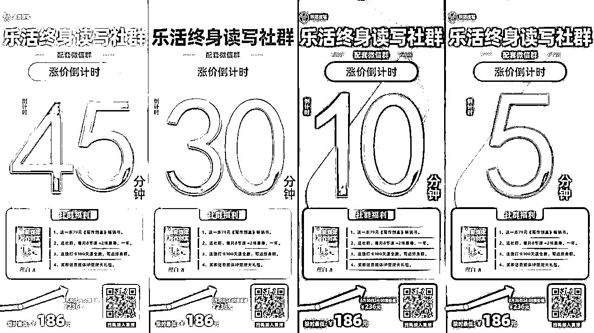
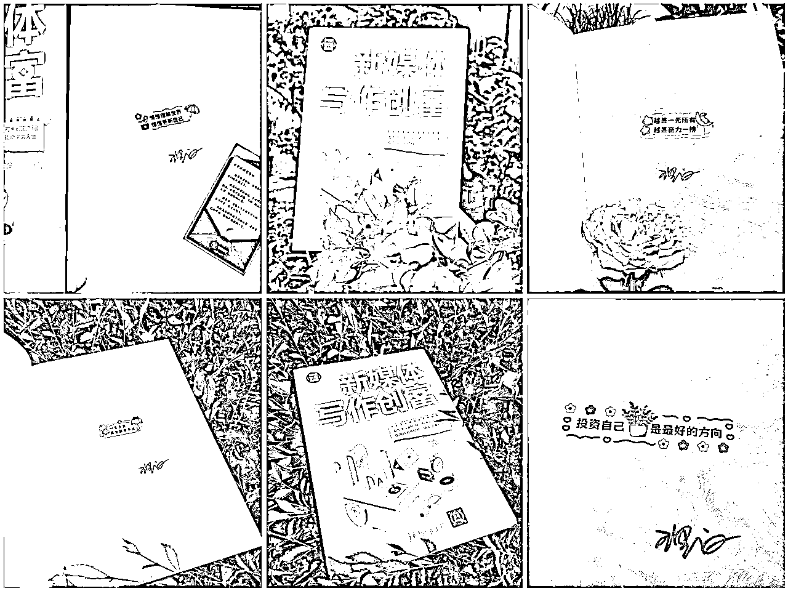

来源：https://fcjmogm9bc.feishu.cn/docx/XHKUdoHCpoTEYsxi6aYcj9Y4nBc
各位老板，大家好，我是大家的老朋友，永远给大家提供IP营销新点子的理白。
上个月，我和「清华大学出版社」签约的新书《新媒体写作创富》正式出版，借助知识星球APP这个工具，完成一次全网发售。用20天的时间，成功拿下当当5榜第一，知识星球3榜第一，GMV破百万，让出版社加印的速度，赶不上我们卖的速度，甚至一度让发货出现了停滞。
正巧，7月7日是我的生日，也是我给发售团队结算佣金、发放奖励的日子，我想，用一本畅销书做自己的生日礼物，是对自己最大的浪漫。
写下这篇复盘贴，给所有想要卖好一本书，或者压根就想借助知识星球这个工具，完成一次百万级GMV发售活动的圈友，一些颗粒度拉满的细节复盘，目录如下：
一套模型，产品包装。
两重体系，相互转化。
三大维度，裂变传播。
四类物料，视觉营销。
五处细节，浪潮转化。
六个指标，要点复盘。
七个感悟，生财祝福。
话不多说，咱们开始，全文共计1.3万字，配图几十张，预计阅读时间15分钟，文末附上了我的完整发售信，已开通复制功能，开源给所有小伙伴使用。
一个产品，在模型设计阶段，要想完成快速裂变，一定要同时具备3重属性，分别是容易卖、愿意卖、抢着卖。
发售本质上，是调动更多的私域资源，不断向外辐射的过程，那么，在主理人自己的私域影响辐射范围之外，靠个人IP溢价想要卖出产品，就变得十分困难。
所以，在产品本身的设计上，就要下足功夫，要让产品做到，哪怕脱离了IP的光环和影响力，渠道和KOL们，也能靠产品本身卖点的提炼+权益的堆叠，让产品具备足够高的吸引力。
而越有吸引力的产品，就越好卖；越是容易卖的产品，就越会有更多人参与进来一起卖。
要想调动更多的人参与一场发售，除了产品本身够强外，也要满足用户内在的精神需求。
什么叫内在精神需求呢？
叠甲护体：不是说看起来的low的产品就不好卖，那是另一套传播模型，不在我们“分销裂变”讨论的范畴。
做一个产品，发心先要摆正，只有能持续为社会带来正向价值的产品，才有其不断裂变的生命力。
那么，围绕着我的新书《新媒体写作创富》，我的发心是：
我从2016年开始，坚持写作8年，从投稿作者到内容主编，从自媒体博主到社群主理人，是写作能力、内容能力，在不断支持我撬动更多机会、取得更多成就、赚得更多财富。
可以说，写作，改变了我这个小镇青年的命运。
那么，我要设计一款产品，可以帮助更多人习得写作的力量，掌握写作的技巧，养成写作的习惯，能像我一样，成为靠写作改变命运的人。
我深知，单靠一本书——
只能学到技法，很难养成习惯；
只能孤军奋战，很难抱团取暖。
现在，已经不是一套标准课就能销量破千万的时代了，2024年后，用户更依赖陪伴、交互和情绪价值。
故而，我设计了「终身读写社群」这款产品，搭配着书一起卖，用社群提供圈子，采用授课、答疑、打卡机制等多重方式，帮助更多想要学习写作的人，更早、更快、更好地融入集体。
那基于这样的发心和愿景，产品被传播的概率，就大大提升。
比如粥左罗老师在他的线下大会中反复cue到我，Kris叔在他的几万人的社群里宣布我新书出版的喜讯，花爷、炮爷、阿猫等好友，也在他们的高客单社群里为我打call，还有洋哥、醒醒、飞巴等伙伴，纷纷自行采购几百本新书，赠送给自己的客户和朋友；我的密友梁靠谱女士，更是用她小小的身躯，肉身扛着几十本书去到各个线下现场，帮忙推广，甚至把她7000元客单的销冠群，当做团购的福利来加码。
也正是因为这样的发心和愿景，很多陌生的朋友、潜水的大佬，纷纷自发帮我做推荐、做背书、做站台。
我一直坚信，使命、愿景、价值观，是一个产品的立足之根，更是传播之源。
除了内在的精神拉力，实际的利润推力也很重要。
为什么要把书包装成社群来卖？
因为一本书的发售过程，从作者、出版社、工厂，到电商平台、直播平台、新华书店，层层分润、层层压价，渠道有渠道的难处，发行有发行的难题，薄利多销的结果，很有可能是众口难调。
比方说，我的这本书，定价79元，发售期间，在当当、京东、小红书、视频号等主流平台上，价格压到了49元。
同时，不同平台的佣金分润，也不一样，好比京东可以给到1%（链接能植入公众号）、视频号可以给到10%（因为是清华工厂直发）、当当就几乎没有分润（却能打榜造势），故而选择公众号渠道卖书，就天然比视频号卖书赚得少，KOL在助推的时候，就会有选择和倾向。
作者的版税，一般是8-12%之间，这是我的第一本书，我也不是非常知名的作者，所以版税不高，分润更少，卖出一本书，只能到手不到5元。
所以，哪怕我把我的收益全部让渡出来，也很难在利润空间上，有更多的谈判空间，那么让更多人愿意参与进发售的愿景，就自然是镜花水月。
所以，要创造足够高的利润，才能让更多人愿意参与进来。
而创造利润的方式，无非就是两种。
创造“利润空间”的这两招，如何灵活使用，让其产生自动转化呢？下一节来细讲。
所谓的两重体系，就是前文所述的“包装产品”和“团购采买”两种形式。
将一本书，包装成一个自带裂变属性的产品，除了设置权益、拉高格局、给足利润外，还需要一个套完整的发售仪式来进行配合。为此，我设置了一套清晰的奖励机制。
一方面，清晰的权益福利，让用户自己产生购买欲望，完成首轮业绩；
另一方面，足够多的分销奖励机制，会让用户自发地裂变、传播。
我们在发售最开始，建立了一个发售合伙人群，但随着更多用户的购买和进场，用了一周的时间，就瞬间把发售合伙人2群都填满了。
产品和营销，永远都是相辅相成的状态，很多时候，不下明确的指令，用户是不会按照你心里的意图前进的，要明确、要数据化，要在用户进群和入场时，就告诉他们，有哪些规定动作要做，有哪些隐藏福利，只要你努力了，就会有回报。
在体验到你产品的好处后，告诉用户可以参加分销这件事儿，可以最大程度地完成首轮裂变。
另外补充一个细节，除了权益海报外，知识星球APP本身的介绍页也非常重要。
我看到过很多正在发售的知识星球类型产品，要么是详情页不更正，光秃秃的很水；要么是详情页写很长，最后都被折叠掉了。
详情页的设置，要尽量满足以下3个原则。
大家看这段对话，我在设置详情页权益的时候，就经过了多轮的试错和打磨，最后形成的状态，是用户生成分销码之后，信息量最多，却刚好不会被折叠的程度。
很多人觉得，这种雕琢会不会是过分严苛，或者过于吹毛求疵？
但是理白认为，成交路径中，战线拉得越长，链条设置得越复杂，用户的购买动机就会越弱。
今年上半年，在生财厦门年会的会场，条形马老师一场《摆脱惯性的思考》演讲中也提到过，提高销转率最好的方式，不是在每一个环节做加法，而是减掉某些中间环节，做减法。
所以，你在物料层面上做出的修订越细致，在成交层面上，需要动用人力解释的成本就越低，实现不销而销的概率就会越大。
低客单产品，就是在极少的页面内，制造极大的信息量，冲击用户的神经，让用户毫不费力地感知到你的宣传，只有在设计层面多推敲，才能在销转中少费力。
你在销售转化时，付出的辛苦，
都是在产品设计时，偷过的懒。
都说，好产品有的是，好渠道稀缺。
但你的产品，配让好渠道来卖吗？
团购采买的方案，是针对大C和小B业务的。
我同样，也设置了完整的权益海报。
一般来说，愿意团购采买的老板，有以下几个类型。
比方说，我的好朋友炮爷，就给自己团队的员工买了一些，日常做内容时对照使用。
新书一经发售，就有很多老客户、老朋友，或者是圈内的同行，买来支持，图书确实比一个具体的产品更具社交属性。有些甚至是没有交集的新朋友，也是50、100本的直接买。
有不少朋友，本身就对我的一系列产品和课程感兴趣，之前没买的，因为有书这个搭子，反而就直接下单了。
比如说，我的前辈洋哥、飞巴等大佬，都各自采买了100本以上，送给自己社群和课程的客户们。
一个我一开始都没想到的点，我的好朋友醒醒教练，采购100本后，直接赠送给生财有术，作为会员日福利。
在这样的基础上，我还定制了不同颜色、梯度的答谢海报，在朋友圈曝光采购大佬们的业务和为他们导流，每一次的曝光，都会有新的朋友注意到我们的采购活动，产生新的交易和互动。
同时，群里的接龙、激活、海报的发放、小作文的发放，都在不断进行二次触达。
有的大佬在采购10本后，因为“海报颜色更漂亮”、“想解锁更多权益”、“盘点一下有了更多人可以赠送”等千奇百怪的理由，又纷纷采购了50本、100本。
C端发售的20天，同时也是B端采购的20天，最后，总采购的册数，一共突破了2000本。
B、C 本无缘，全靠产品来牵线。
在两重体系的大框架下，更多的合作机会，也在互相转化。
是基于很多B端团购的客户，选择了在自己的核心社群、重要渠道中揭晓福利，搞接龙或抽奖赠书，进而让这些老板的客户群体，关注到我的新书和星球。
有大量的新客户涌入，在决策成本不高的情况下，因为KOL的背书，而为我付费。
是部分老板，在自己团购我的新书后，选择介绍了其他老板来团购，或是压根就以自己的名义替其他老板团购，形成了超级人脉节点的转介绍。
说个题外话，正是因为这样的转介绍，中间还促成了一单比较大的生意，磋商了一个银行机构的内容营销顾问岗位，也赚了大五位数。
是每一个购买了新书或星球的新客户，都会进入一套完整的SOP流程，除了发放见面礼、福利、讲清规则外，在用户进入社群的第一时间，会让用户立刻知道采购的权益和福利，并给出让用户进入采购大佬群的规定动作和群码。
只是增加了这样一个简单的环节，有接近30名新购书的完全陌生用户，直接选择采购10本以上，完成了C到B的转化。
同上，除了在SOP中给出用户采购渠道外，还会给到用户转介绍的佣金比例和发售合伙人群码，有200多名新用户，直接进入了发售合伙人群，从消费者直接变为销售者，启动了社群的二次裂变。
具体裂变方式，在下一章节中，详细拆解。
提供了丰富的朋友圈文案、公众号文案，让每名分销者，都不缺素材可以用，单打独斗也能拿好名次。
比如，我为了这次发售，一共攒了4篇公众号推文、7篇社群发言稿、10场直播连麦位、50多张海报、100多条朋友圈文案，让博主、号主和主播，永远有子弹可以打。
有老牌战队有新兴战队。
加入老牌战队的好处是，战队长经验充足，打的会更轻松；
加入新兴战队的好处是，可以在战队里占据重要位置，很容易在这次发售中冒头，建立生态位。
当然，不同战队在实际操盘过程中，也展示出了极强的心理素质，和极为多变的营销策略。
采用的是“集中力量办大事”+“故事会大咖连麦借势”的形式，在发售早期就建立了自己三榜第一的强大优势，更是借助“第一”这个最直接有效的生态为，不断卷动更多个体分销者加盟，因势利导、借势而为，最终奠定了断层第一的绝对优势。
采用的是“小米加步枪”+“农村包围城市”的极高战略眼光，不止把目光放在了榜单前5厮杀最激烈的位置，还在自己确保第二名的优势后，转而扶持更多战队成员，各自出战，最终，榜单前20名中，足足有10名成员，来自其幕后助推，可以说，完成了规则之内，最大限度的福利压榨。
采用的是最老牌的“快闪群”+“直播转化”模式，都多次邀约我和靠谱老师连麦转化，稳扎稳打，同样取得了前五的好成绩，并为自己各自的高客单产品转化，做了充分的内容沉淀和准备，ROI也跑得极高。
打磨了独有的“百日筑基计划”模型，并在发售结束后，无缝推出与阿猫觉醒系列合作的新产品，借助前端势能强力完成产品设计和孵化，做到了24小时2000+的新业绩，用一套班底，打出了双倍的效果。
集体的智慧，永远优于个人的智慧，让每个战队放开手脚去做，按自己喜欢的方式运营和转化，是我做出的，最好的决策。
说实话，我自己也是打战队出身的，是连续两年生财拉新榜单的第一名，我对“战队”这两个字，有很深的感情。
我深知——
一个人的力量有限，团队的力量无限；
一个人的智慧有限，团队的智慧无限。
而在影响力释放的边界内，协调、统筹更多人、事、物料、节奏，是对战队长和操盘手心力的极大考验，无论结果如何，都能在这样短短的十几天里，得到巨大的成长。
可以说，理白从原来年入几十万的写作教练，到现在至少实现“十倍增长”的社群主理人、操盘手，生财无论是在环境上、实战上还是认知上，都给我提供了巨大的帮助。
这次用战队形式做发售，也是对生财的一次致敬，我想把我自己会的，教给这些弟弟妹妹们，把更多好的方法、好的资源，代代传递下去。
所以，在老牌战队组建完毕后，我也在鼓励每一个新个体，自己组建战队，自己带兵打仗，去享受这份有战友做后盾的快乐，去享受这份“与子同袍”的情谊。
我把我的这次发售，称之为一场友谊赛，就是给大家练兵用的。所以习惯了打辅助位的每个人，都可以趁着这次友谊赛，练练手、突突围，前20都有奖励奖金，也确实鼓舞了很多人，做出了自己的成绩。
这一部分资源，一般是出版社提供的自有渠道，比如在出版社官微、官博的推文，邀约成熟作者写的发售文案，微博和抖快小红书的投放推流，以及几个购买平台的榜单维护和评论区打造等等。
这一部分资源，主要依赖于主理人和发售团队的流量基础，除了每日提供固定文案外，还做了大量的运营动作。
每天起床后，给合伙人投喂物料，手把手提供实操方案，以KPI的形式拉动更多人参与发售。
每日睡前榜单更新后，会在合伙人群及队长群里，更新战况，并在朋友圈感谢各个战队。
每满100人的节点，都设置了有奖竞猜活动，且每100人节点海报，颜色各不相同，增加视觉营销的多样性和新鲜感（下一节详细讲视觉营销）。
每天引导发售合伙人写新物料，既能增长素材库，又能激发合伙人的创作热情和分销热情。
在发售的最后一天，利用涨价的优势，增加奖项，引导前期从未行动过的发售合伙人抓住最后的机会。最后一天，也成功日增300新用户。
在各个战队核心群内，发红包+输出情绪价值。
精细化运营，既要有流程SOP的系统规范，又要有主理人强大情绪价值的鼓舞，二者之和，才能创造出最大的价值。
夏季伊始，线下活动多，参与各类活动的朋友也多，他们纷纷以分享嘉宾的身份，肉身背着重重的书来到现场，搞抽奖、搞活动、搞福利，通过各个KOL和大佬们的口耳相传，隐性传播影响力。
时间拉长到一个月为周期，让大家可以在任何时间入场，细致的SOP，可以让每一个人都清晰地知道自己该做什么，既可以选择细水长流的方案，每天固定发圈、公众号转化、私聊触达，也可以拉快闪群，集中发售，涨价前攻破。
战队作战的，节奏跟上好争先；个人作战的，哪怕中间有一段时间掉队也没关系，随时都可以重新发圈，发圈就有得赚。
快慢皆宜的营销策略，让更多围观的人，在最后几天内，接连入场。
而更妙的是，也恰恰是这份“慢节奏”的状态，让许多伙伴，哪怕在发售期结束的7月，还在持续发圈、成交、赚佣金，好的产品，哪怕涨价了也依旧有人买，哪怕没有组织带队了，也依旧有人卖。
不销而销，被动营销，才是王道。
尽快做出自己的视觉锤，这就是产品的出生证明。
我之前看过大量做知识付费小伙伴从0-1的过程，很多人一直在卖产品这块犹犹豫豫，原因就是：没有被人看到。
你不能把信息放在自己的脑袋里，必告诉所有人你有产品了，告诉所有人你要开始卖产品了，这样才能激励你走出下一步，这个就是视觉营销。
只有文案是不够的，必须用好视觉符号，提供丰富的物料选择，给战队和分销者足够多的子弹，用视觉炸弹，轰炸意向用户的视网膜。
这次对视觉营销恰到好处的运用，也是本次发售的一大亮点。
为此，谱白专属设计师，佳丽和肖沫，全时段坐镇，提供了源源不断的视觉素材。
此类海报，主要展示的是“交付背书”、“销量背书”、“荣誉背书”，旨在多维度展示实力和交付颗粒度。
此类海报，从倒计时10天开始放出，精细化到日、小时、分钟。

此类海报，重点突出采购福利，为C→B升单使用。

此类表情包，重点用来维护社群凝聚力。特别值得一提的是，社群的名字选用了钟表元素，算是一个巧思设计，也在宣传过程中突出了这点，起到了转化作用。
在营销和发售的每一个环节，我都写了清晰的SOP，给战队合伙人使用。
细致到了公众号的排版、直播间的挂车、分销码的生成，都一一做了导图，还专门沉淀了“操作库”。
发售有轻重缓急，营销也有节奏，物料放出的时机，也进行过考量。
发售初期，要抢占先机，开宗明义，故而多露出福利海报、权益海报，突出权益性价比。
发售2-3天后，开始推出长文案，更多聊愿景和价值观，吸引同频的人持续跟进。
发售4-5天后，推出各类型展示实力的海报，如当当登榜、星球榜一等等，突出人多优势，激发更多围观人群关注和从众心理。
发售第一周，为实绩的最高峰，同时也是大家疲态的开始，这时就开始采用其他渠道的发售形式来重新刺激，比如公众号、分享稿、视频号、直播间等等。
发售倒计时10天，开始推出涨价海报，第一次用价格锚点吸引用户，继续促一波儿成交。
发售倒计时9天，就以按部就班的方式，每日照常推出涨价节点，产生新物料，并适当在各个战队的核心群内做情绪按摩。
发售倒计时2天，就提前打包放出所有的小时倒计时海报，发售当天下午打包放出分钟倒计时海报（这里的考量是，给各个战队提前换海报二维码的时间，不然真到最后一天打仗了，来不及）。
发售最后一天，持续活跃在线上，提供大量的短文案物料，放出榜单的刷新物料，不断更新日榜单和月榜单，全力以赴，用力一搏。
整个周期，张弛有度，节奏分明。
如果说，每一名分销者，在外打仗，是锐利的剑。那作为主理人，在城中守护，给足后勤保障，就是重中之重。
在销售、服务和运营过程中，用户会接连不断地，产生诸多问题，而这些问题，经常重复发生。
所以，不断沉淀“问答库”，也尤为重要。
在发售期间，我一共组织了4场以上的集体接龙，把所有可能产生的问题，全部收集完毕，而后做了详尽的解答，分别以“文字问答库”和“视频切片回答”两种形式，沉淀在星球精华帖和视频号里。
无心插柳柳成荫，视频号因为发布这样的切片，竟然还小爆一条，顺势拉动了新书的销量，还引流了不少精准粉丝到私域，算是一种全新的一鱼多吃了。
为什么要人工发书？又要帖快递费，又费功夫，不嫌麻烦吗？
这里，是一个非常有用的来自图书营销专业操盘手的数据：仅仅在书上留下二维码，加粉率只有30%；若是把二维码做成书签的形式夹在书页里，加粉率可以提高到80%。
故而，在图书的“开页设计”上，也可以有巧思。
比如，书签上的“一封信”，扉页上的签名和不同种类的励志贴纸，还有线下见过面的朋友们的合影照片等等——
既在情绪价值上，给足力量；又在转化率上，做足准备。

后端的交付，是支撑前端敢放开手脚裂变的核心原因。
首先，每周固定的授课、实时的回应、直播间的答疑，在交付层面上，给足了支撑。
其次，安排了有高客单后端的嘉宾做分享，输送精准用户。
第三，与出版社合作，量身定做了一套写作出书类产品，上线后将作为后端产品长期转化。
最后，量身定制各类承诺过的奖励课程及社群。
每天要盯的数据，是决定数据走向的关键，感性上再怎么沉浸，理性上也要有基本的分析能力。
不同的图书在不同的渠道，存放于不同城市的仓库，无论是采购大佬的团购，还是自己的集中采购发货，都需要每天知道数据，方便调配。
当当的冲榜，是一个战略性任务目标，无论是24小时榜单、7日榜单、类目榜单，当当网有很多榜单可以冲刺，所以在集中购入后紧盯榜单数据并截图制作海报，也是关键一还。
发售周期的20余天，用户的增长有急有缓，掌握数据的增长情况，能更好地协调团队的重心。
战队排名的变化，也是主理人需要跟进的，一方面是要给冲劲儿够的战队足够的支持和辅助，另一方面，也要关注到进展有困难的战队，给到帮助和鼓舞。
要实时生成退款数据，一方面是清楚浑水摸鱼捞福利的人，另一方面是根据退款情况，预判最终的成交率，并适当分析退款原因，做出产品交付层面的改善。
产品发售的早期，需要不断强化规则来让用户适应节奏，如有违规情况，要及时制止并给出处理措施。
以上六个方面，是流程上的一些细致复盘，而在发售过程中，我也产生了一些新的感悟及感谢，分享给大家。
运营大型拉新活动，就像是一个修罗场，巨大的磨盘碾过来，一切成功的因素，与每个环节息息相关。
当然修罗场不只针对发起人，也针对被邀约人，在这里，你可以看到人性当中的光与暗。
可放长了看，放大了看，放远了看，一个人的成功与他所做的决策，其实早有线索，也互为因果。
一场长达半个月的大型活动，足以反映出一个人的真性情、假面具，得失之间，也并不代表永远。
做发售活动，就是要理解人性的幽暗，但时间检验出的袍泽之情、战友之义，更为弥足珍贵。
发售过程中，最欣慰的是，再一次涌现出了许多自媒体新人，成功出单、拿到佣金、崭露头角。
而观察这些在圈内不断冒头之人的成长史，会发现，他们都是同时在修炼“内容能力”和“销售能力”的自媒体人，不偏科，不冒进，都是把自己成长，融入了大佬的产品体系里。
前文说的公子正，是粥老师的销冠，老马，是阿猫的销冠，新自媒体人，在没有资源、没有流量的前提下，不断修炼内容能力和销售能力，在销售好产品的过程中，当然可以积累自己的势能，就自然比旁人，跑得更快。
很多人的努力程度，还远远不到拼天赋的程度，正如很多人怼出的产量，还远远不到拼差异化的程度。
这次发售活动，其实就是一次小型创业的缩影。
有的朋友，最开始拿不到正反馈，就立刻放弃了；有的朋友，前期发力很猛，瞬时爆发后，又沉默了。
很多时候，我会觉得，持续写作、持续做内容这件事，看似笨拙，看似没有追逐风口，实际已经拥抱了最大的风口：聚焦一件事儿，就是我的风口。
所以——
退出者，会成为坚持者的红利；
沉默者，会成为表达者的红利；
怠惰者，会成为执行者的红利。
世界的运行规则从未改变过，都是有的人成为红利，有的人吃到红利，看怎么选了。
上次在生财发的帖子下面，有这样一条评论，不是羡慕我们能赚多少钱，而是说：真羡慕在圈子里有这么多好朋友的圈友。
我回的是：在生财，可以找到很多朋友。
可以说，从2016年以来，我的朋友们几乎都是在互联网上认识的，正是朋友们的一路托举，造就了理白的现在。有的友谊会走散，有的友谊会愈发坚实，但是不可否认的是，这些朋友的观点、成就，在反向塑造和影响你，好的圈子和社群，是可以改变人，也是可以成就人的。
从最早跟我的好朋友靠谱、醒醒一起打战队，到后来靠朋友们盘发售、做裂变，共同交付、彼此成就，我们的财富和幸福，都在一次次打仗中节节升高。
以前我一直表现得很坚强，很多事儿都自己扛，也不咋跟人倾诉，这两年，我嘤嘤的次数和当甩手掌柜的次数越来越多，这当然要感谢团队的配合，和朋友的扶持。
一次好的发售活动，本身也是一次朋友之间，双向奔赴、互相成就的过程，朋友是自己选择的家人，社群是自己构筑的营垒。
我盖洛普前五，分别是完美、成就、沟通、前瞻、竞争，简言之，一个居安思危的卷王。在遇到梁靠谱之前，我就没见过比我更卷的人，当然，我也很喜欢PUSH身边的人卷。
我没有办法假装佛系，成就才干不接受摆烂和躺平，更不接受自欺欺人地自我麻醉，最后冠以「我只是不争，我争了一定牛逼」或「我只是更享受闲适的生活」这样的论调。
上山的人没资格嘲笑下山的神，还没到躺平和佛系的份上，就把二三十岁的人生活成七八十岁的心态，不要骗自己。
要做卷王，要做那条涌动在沙丁鱼群中的鲶鱼，让全世界为你躁动，所以这次发售，我会主动私聊邀约一部分一直迟迟没有行动的人，让没当过指挥官的当指挥官，让没做过操盘手的操盘手，能带一个是一个，能把目标定高点，就别定低。
我很喜欢我的合伙人大斌，我去找他聊了，他就狠狠执行了，还想办法抓来了Andrew老师和右军老师两位大佬，一举拿到第二名，又在新一轮比赛中蝉联第一，这多爽啊。
敢想，才配赢。
零星地变得优秀，也能拼凑出星河。
人不是活一辈子，而是活几个瞬间。
我直播的时候讲过，人活这一辈子，当然不只是为了赚钱，虽然挣的也不少，但还是有一些精神追求和自我实现。
我想，这些反馈的动人时刻，便是我们在这个繁杂的时代，还愿意坚持写作的意义。
我经常想，为什么我们搞拉新、发售，总是拿第一；而我们想搞活动，总会有很多人愿意参与进来，跟我们一起作战？
人这一辈子，赚钱当然重要，但热泪盈眶也很重要，莫逆之交也很重要，使命必达也很重要，把酒言欢也很重要，那些让我们多巴胺和内啡肽分泌的无数动人时刻，会比赚到某个金额数字本身，更打动人心。
7月7日是我的生日，所以今天这篇帖子的结构，我早就想好了，从1到7，七个篇章，环环相扣，暗合了我的生日，又对仗工整，符合我强迫症的秩序感。
其实这篇帖子，从发售开始时，我就已经动笔在写了，每天的发售进程突破一点点，我就像写日记一样记录一点点，生怕错过当时的心态、细节和策略。发售结束了，完全达到了自己预期的目标，帖子也写完了，颗粒度拉满了，情绪也异常饱满了。
去年生日那天，我同样写过一篇帖子，送给了圈友们，名字叫《从3000元到300万，这10个思维模型，让你不走弯路斩获人生第一桶金｜写在理白的三十而立》。
附链接：
当时这篇帖子发出来，很快就加精拿了龙珠，也得到了非常多圈友的生日祝福，当时我就想，每年生日，我都要写一篇长文，既是对自己最好的总结，又是给自己的生日礼物。
而这一年，是我加入航海家俱乐部的一年，也是我拿到微天使投资的一年，也是我第一次参加线下大会，并有机会在厦门年会中做嘉宾分享的一年——
我切切实实又一次发生了改变，这是从单体思维到团队思维的转变，从线性增长思维到十倍增长思维的转变，从操盘手思维到组局官思维的转变，这里海量的信息源和实战，不断指引着我，向我少年时未曾想象过的远方，奔涌而去。
社群成就了我，我也愿意更好地反哺社群。
所以在写这篇帖子的时候，我就想把它写成「靠知识星球做发售的SOP标杆」。
另附开源发售信：
所以，带着这样的双重期待，我完成了这篇帖子。
那么我想，那个不断攀登高峰，不断追求卓越，每年追求进步的你自己，就是给自己最好的生日礼物。
仅以此文，送给生财圈友和比比，祝我生日快乐。